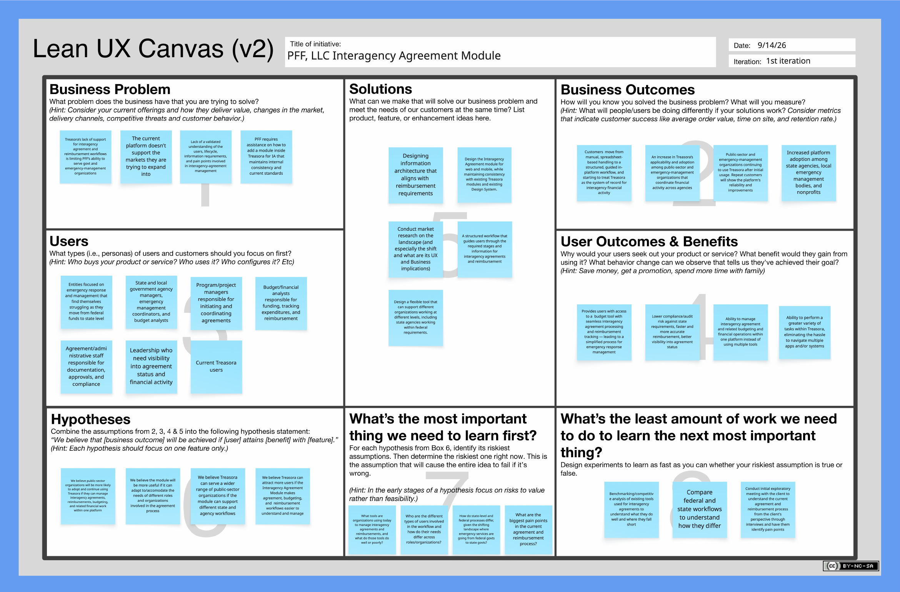
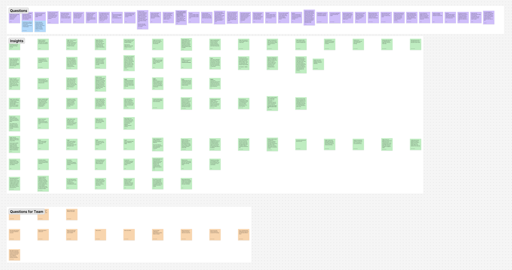

Manage
Create agreements and keep their documents and forms in one place.
Treasora is a budgeting tool that is integrating AI assistance for government agencies, nonprofits and small businesses, including teams working on emergency response. With PFF, LLC, our team is designing a new module that lets these agencies create, track and approve agreements between organizations in one place, on web and mobile.
Status: early in the project. We have finished domain research and our first wireframes, and we are running user interviews. Final designs are planned for May 2027.
The problem


An interagency agreement (IAA) is an arrangement in which one agency or organization reimburses another for work done on its behalf. Treasora can plan and forecast a budget, but it can't process or track these agreements, so teams rely on outside tools and manual workarounds.
Today the process is spread across Forms 7600A and 7600B, G-Invoicing and InCEP. There is no one-to-one match between them, so people stitch the workflow together themselves.
The goal
Create agreements and keep their documents and forms in one place.
Follow tasks, approvals and the money that goes with them.
See progress and financial status across an agreement's whole life.
The module follows federal requirements and extends Treasora's existing design system, so web and mobile feel like one product.
A key question: how much AI help is useful, and when should a person decide?
Who it's for
The AI question
PFF wants AI to act like a helpful expert inside the module. The agreements involve federal agencies, sensitive government information and financial data from systems like G-Invoicing, so how much to trust it is a design question, not only a technical one.
[One sentence on how this shapes your design so far, for example "In our wireframes, AI suggestions are always shown for a person to confirm."]
Planned handoff
My process
We started with the client: we met with PFF's CEO and design systems team, so we started with the client. We met with PFF's CEO and design systems team, studied Forms 7600A and 7600B, G-Invoicing and InCEP, and compared existing tools. Then we pulled it together in a Lean UX Canvas.
The canvas lists who we're designing for, what we believe will make the module succeed, and our riskiest assumption: what pain points users have in today's agreement and reimbursement process.

Click to view full size

We are recruiting and interviewing agency staff about their daily work, the tools they use, what slows them down and how they feel about AI help. We cluster notes from each interview in FigJam to find patterns the whole team can agree on.
Early themes are not final requirements until we have talked to more people.

We mapped the module from a dashboard that shows what needs attention and what is waiting for you, to creating a new agreement, to each agreement's orders, payments, amendments, documents, history and closeout. Color marks where we added quality checks (yellow), AI support (blue) and client suggestions (orange).

Click to view full size
Low-fidelity wireframes then explore two ideas: a dashboard that shows every agreement's money at a glance, and a form that helps fill in a new transaction.


We will turn our interview findings into prioritized requirements, build clickable web and mobile prototypes, and test them with users from February 2027.
We plan to test these tasks: finding and opening agreements, reviewing and approving requests, checking AI-filled information, and tracking financial activity.
User research
We interviewed nine people across the agreement process, then grouped their notes into patterns in FigJam.

Goals for the module and where it fits in Treasora
Day-to-day agreement and funding work
Funding, tracking and reimbursement
Security and privacy risks of AI
The same details go into a PDF, InCEP and G-Invoicing.
Mistakes surface only after G-Invoicing rejects a record.
Everyone sees the same options, whatever their role.
Paper signatures and Excel trackers fill the gaps.
Users can't easily see where an agreement stands.
Useful, but raises security and reliability concerns.
Client work in progress. Some details are simplified or left out to respect PFF's confidentiality.